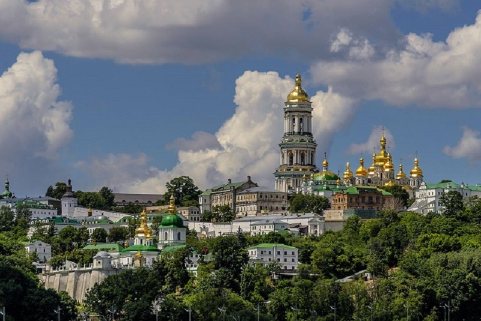
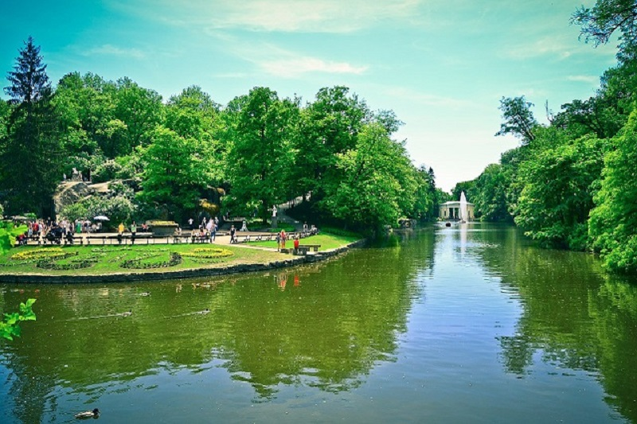

Фото виставка кращі роботи

Заповідник «Кам'янець»
Національний історико-архітектурний заповідник «Кам'янець» — науково-дослідний та культурно-освітній заклад, історико-архітектурний заповідник національного значення.Розташований в Кам'янці-Подільському.

Києво-Печерська лавра
Києво-Печерська лавра — один із найбільших християнських центрів України, визначна пам'ятка історії та архітектури. Лавра розташована на Дніпровських пагорбах, на північ від центру Києва.

Софіївський парк
Національний дендрологічний парк «Софіївка» — шедевр світового садово-паркового мистецтва кінця XVIII — початку XIX століть. Парк розташований у північній частині міста Умань, обабіч річки Кам'янки.